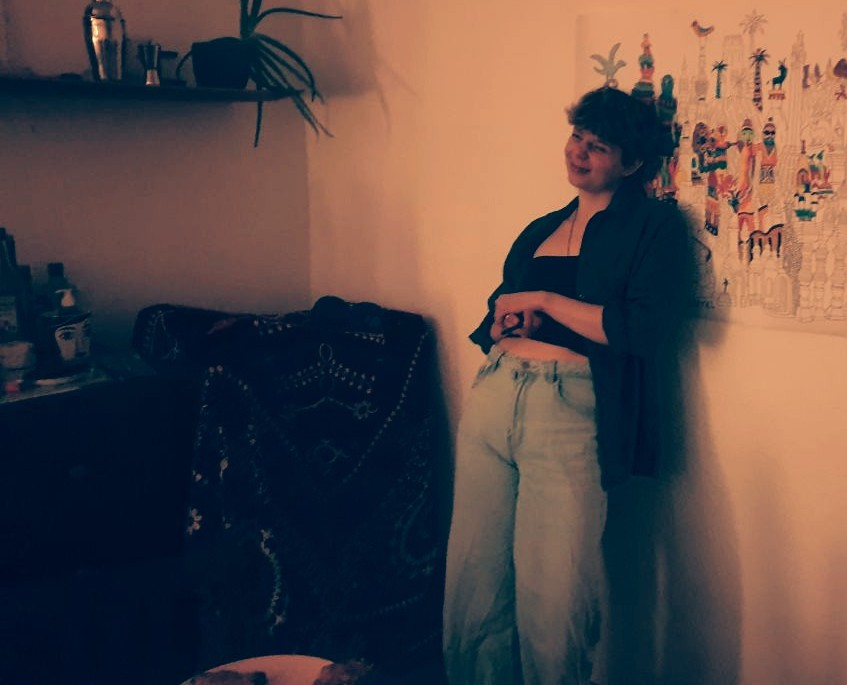

Hello, je m'appelle Ophelia.
Photographe indépendante basée à Genève, je couvre vos évènements, concerts, EVJF, ou sessions portrait.

J'aime capturer des moments précieux, des sourires complices, des rayons de lumière naturelle. Pour les couvertures d'évènements ou les portraits en extérieur, nous collaborerons pour un rendu optimal.
Disponible à Genève et aux alentours, je parle français et anglais.
Clients
- Artistes indépendant·e·s
- Fondations et associations
- Familles, couples, ami·e·s